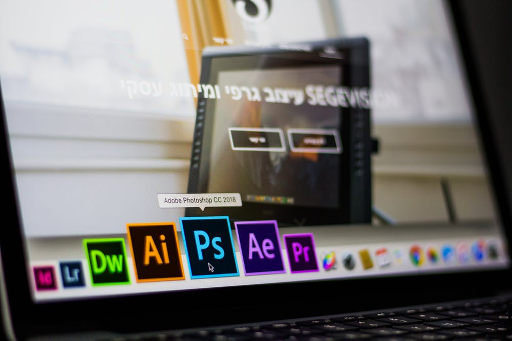

目次
フロントエンドとバックエンド
まずフロントエンド（front end）とはWebサービスやWebアプリケーションなどでユーザーがボタンを押したり入力をしたりする部分、またソフトウェアなどと直接やり取りをする部分のことを指します。
ユーザーがWebサービスなどを利用する時に目に見える表の部分はフロントエンドの部分です。
※必要スキルや使用言語については後述します。
そしてバックエンド（back end）とはユーザーが入力した内容などのデータ処理、また保存、データ処理の結果の出力などを行う要素のことを指します。Webサイトのデータベース管理システムなどです。
フロントエンドとは違いバックエンドはWebサービスを使用するユーザーには見えない部分です。
バックエンドで使用されている言語ですが、
JavaやPHP、Ruby、Python、Scala、Node.jsなどがこれにあたります。
またデータベースではMySQL、NoSQLなどが使用されています。サーバに対する知識やセキュリティ面の知識・対策が求められます。
CMS(コンテンツマネジメントシステム)で有名なWordPressはPHPにより作成されています。
言語の種類としては「動的型付けや静的型付け」「スクリプト言語とコンパイラ言語」などの分類がございますがここでは割愛させていただきます。
このサイトでは主にフロントエンドに関する基礎知識を紹介・解説します。
フロントエンド開発で使う言語
フロントエンドの領域では主に
- ① デザイン作成
- ② マークアップ
- ③ JavaScriptプログラミング
の3つに分解して考えることができます
①第一にデザイン作成です。Web制作会社であれば、クライアント先のイメージや目的などを明確にし、「ブランドイメージに合う色や配列などは何か？」などのイメージをすり合わせていく段階からスタートします。また自社でWebサービスを持つ企業であれば、「新しく創り上げるページはサービス全体とイメージが合うか？」「ここの動作がわかりにくいので、表現として新しいアイコンを用いて伝わりやすくするべきなのでは？」といった打ち合わせも必要です。
デザイン制作に必要となってくるソフトウェアといえば、Adobe社が提供しているPhotoshop,Illustratorです。
最近ではFigma,Adobe XDなども人気が上がってきております。
Photoshopは主に画像の修正やバナーの制作・デザインカンプの制作などに使用され、Illustratorではアイコンなどをベクター形式でつくる際に使用されます。「Adobe Creative Cloud」というサービスに入ればこれらがサブスクリプションで利用ができます。

Adobe Creative Cloudについてはこちら(公式ページ)
②マークアップではHTML CSS を使用します。
HTMLはHyper Text Markup Languageの頭文字をとった略称でありブラウザ上で表示する文書構造を示します。CSS(Cascading Style Sheets)ではそれらを装飾しデザインするために使用します。
HTMLで枠組みを作り、それを見やすいようにCSSで装飾するとといったイメージです。
HTMLとCSSにはバージョンがあり、最新版がHTMLではHTML5、CSSではCSS3となっております。
開発現場では先程①で作られた完成されたデザインを元にコードに落とし込んでいく必要があります。
細かな表示崩れや、配色の間違いがないように注意深くしていかなければなりません。
最近ではメンテナンス性を意識したCSS設計にも注意を払う必要があります。(詳しくは後述、モダンな環境とレガシーな環境)
③最後にJavaScriptです。
HTMLとCSSはマークアップ言語と言われているのに対し、JavaScriptはプログラミング言語となっております。
マークアップはパズルを組み立てるようなイメージでコードを書いていきますが、プログラミングは条件によって数値を変えたり、指定した数だけ繰り返し処理をしたりとパターンによって動的に表示を変えることができます。
JavaScriptでできることは多岐に渡り、Webサイトにアニメーションを入れたり、クリックやスクロールなどのユーザー側の操作によって機能を拡張することもできます。フロント側(ブラウザ側)で動く唯一のプログラミング言語です。
近年最も注目されている言語の一つとしても挙げられます。
JavaScriptは開発現場によって担当する人が違います。フロントエンドエンジニアがするケース、HTMLコーダーが簡易機能を実装する際にライブラリを用いながらするケース、Webデザイナーがコードまでも担当するケースなどがあります。
モダンな環境とレガシーな環境
フロントエンドは技術の変化が激しい世界です。インターネット黎明期ではテーブルレイアウトと言われるものが頻繁に使われておりましたが現在は古い技術として取り上げられています。
必ずしも「古い = 悪い」というわけではございませんが、Googleなどの検索エンジンに表示されにくいものが古い技術には多くなっております。
このように古い技術のままアップグレードされずにいる開発環境をレガシー、最新の技術に寄り添った開発環境をモダンと言います。
レガシーな環境のままHTMLやCSSを更新していないと、長期に渡ってサービスを運営していく場合に大きな難点にぶつかります。
それは「メンテナンス性が著しく低い」開発体制になってしまっているというものです。
本来であれば少しCSSのスタイルを編集する程度のものであったのが、いくつものファイルで強引に上書きされているがゆえに「どのファイルを修正すれば良いか」というものに無駄な時間がかかってしまうということがあります。
ここで現在モダンな開発環境におけるメンテナンス性を上げる対策をいくつかご紹介します。
- ①CSSメタ言語を使う
- ②タスクランナーを利用する
- ③JavaScriptフレームワークを導入する
- ④コード規則を作る
①CSSメタ言語を使う
CSSメタ言語とはCSSに変数や条件分岐などのプログラミング要素を加えて書くことができるものです。
代表的なもので「Sass,Stylus,Less」などが挙げられます。
これらを使うメリットは、同じようなデザインを持ったパーツを使い回せたり、一部を編集するだけでいくつかのスタイルを編集できることにあります。運用する面でこスピードが上がり、効率が良くなります。
②タスクランナーを利用する
タスクランナーとは従来手動でやっていたWeb構築に必要な処理を自動で行ってくれるプログラムのことです。
代表的なものに「Gulp,Grant」というものがあります。
具体的には、画像の圧縮処理やSassなどのメタ言語のコンパイル(利用できるように自動変換)、サイトへのアップロードなどもできるものさえあります。
そうすることでチームコーディングをする際に全体として圧倒的に開発速度をあげることができます。
③JavaScriptフレームワークを導入する
フレームワークを一般的な用語で置き換えると、「枠組み」「骨組み」となります。
あらかじめ備わっているパーツなどを組み合わせて、必要に応じて機能を追加していくことでページを効率よく量産できるというメリットがあります。有名なものとしては世界最大のSNSサービスを開発しているFacebook社が公開しているReact.jsや世界最大の検索エンジンGoogleが手がけるAngular.jsやVue.jsなどがあります。
学習コストが高いという難点がございますが、これらを習得することでチーム開発におけるコンポーネント(部品)制作において非常に強力な力を発揮します。
④コード規則を作る
基本的にWebサービスを自社で行う企業、受託で複数の案件を抱えている制作会社においてはチームで開発するのが原則です。
そうなった時に意識しないといけないことは、チーム全体の開発速度です。
自分1人ではわかっているつもりでもCSSのクラスの付け方や、ファイルの管理方法などはある程度チームで共有していく必要があります。
基本的に良いコードとは
- ・予測しやすい
- ・保守・運営しやすい
- ・再利用しやすい
- ・拡張しやすい
という点が挙げられます。
いかにチーム内で命名規則を統一させるか？などといった対策が必要です。